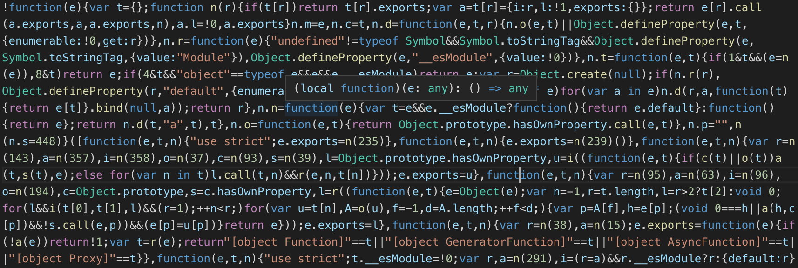
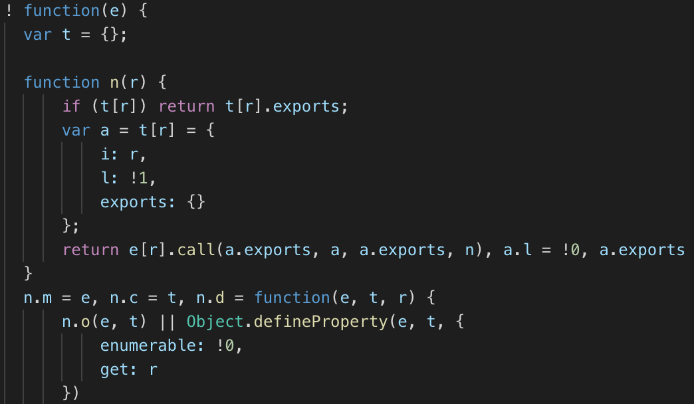

Next up was a monitoring system for the level of my propane tank. I have a standard 20lb propane
tank in my van. It's stored in a sealed box with a vent to the outside, so the traditional method of lifting the
tank to see how heavy it is and guess how much is left is out of the question. To avoid running out of propane at an inconvenient time, I needed a way to monitor its current level wirelessly.
Items needed to set this up:
- Propane Tank: Any standard 20lb propane tank should work. Other size tanks could work as well, but would need some modifications to my script
- Bluetooth Propane Sensor: This is the only wireless propane sensor I've been able to find
The propane sensor has its own app which works pretty well on its own. I would always forget to check it
though. I wanted to integrate it into my Home Assistant setup so I could look at one location for all the
systems in the van.
I reached out to Mopeka to see if they had an API for the sensors, but never received a
response. Looks like my only option would be to reverse engineer the app.
I knew that the sensor communicated using bluetooth, so the first step was to see if I could connect to
the device with the Raspberry Pi and read any sort of data from it. With some more research, I figured out that
the device acts as a BLE beacon and sends out its advertisement data every 10 seconds (this interval can be
changed by holding the SYNC button for 5 seconds). I was able to read this using hcitool and hcidump. I ran these
three commands in separate terminal sessions:
sudo hcidump
sudo hcidump --raw
sudo hcitool lescan
sudo hcidump --raw
sudo hcitool lescan
"sudo hcitool lescan" scans for bluetooth low energy devices while "hcidump" and "hcidump --raw" dump
information from scanned devices. Here are the outputs that I got from the propane sensor:
stuff**************************************************
The advertisement data included 25 extra bytes of data. I knew the propane level must be encoded in
this data somewhere.
My first attempt at decoding the data was to concurrently capture that data from hcidump and from the
tank check app and see if I could find any correlation between the two. After many attempts though, I couldn't
find any sort of obvious correlation. Because of this I concluded that the app must be performing some post
processing on the data.
My only other path was to reverse engineer the app. With some research I learned of a tool called
Apktool which allows you to unpack a .apk file (an android app file) and view the resources used to build it. It
also allows you to make changes and rebuild it into a new .apk.
I used apktool to unpack V2.5.1 (the latest version when I started working on this) of that tank check
app that I downloaded here:
Browsing through the files, I found that most of the code was written in javascript and contained in a
file located here: "assets/www/js/dist.bundle.js". Unfortunately, the code from apktool was not formatted very
well and almost impossible to read looking like this:

I was able to make it more readable using https://beautifier.io/:

Reading through the code, it appeared that apktool preserved the variable and function names that were
parts of classes, but not any other variable names. Luckily this was enough to help me follow the code. The
first thing I looked for was the piece of code that printed the percentage reading to the app. I knew if I could
find this piece of code, I could trace it back to see where the data came from. After finding it, I was also
able to edit this code and recompile the apk to print other info to help me decode what was going on.
I won't go into too many details on reverse engineering the app from here, but I basically followed the
data through the app from when it's first read in the bluetooth advertisement data to it being converted to a
percentage. I converted the javascript to python for my own script. I was also able to decode the battery
percentage, temperature, and quality of the reading from the data.
For reading the bluetooth data in the script, I found another python script online that would read BLE
data and converted it for my needs, filtering by the bluetooth address of my propane sensor. The final script
which sends this data via MQTT to Home Assistant can be found here. For the script to have access to bluetooth,
it must be run with "sudo -E"
I then created a systemd service for the script:
sudo nano /lib/systemd/system/propane_mqqt.service
[Unit]
Description=Propane MQTT
After=multi-user.target
[Service]
Type=idle
ExecStart=/usr/bin/sudo -E /usr/bin/python3 /home/pi/python/propane/propane_mqtt.py
WorkingDirectory=/home/pi
User=pi
[Install]
WantedBy=multi-user.target
Description=Propane MQTT
After=multi-user.target
[Service]
Type=idle
ExecStart=/usr/bin/sudo -E /usr/bin/python3 /home/pi/python/propane/propane_mqtt.py
WorkingDirectory=/home/pi
User=pi
[Install]
WantedBy=multi-user.target
sudo systemctl daemon-reload
sudo systemctl enable propane_mqqt.service
sudo systemctl enable propane_mqqt.service
And added the sensors to Home Assistant:
sensor:
- platform: mqtt
state_topic: "van/propane"
name: 'Propane Level'
unit_of_measurement: '%'
value_template: '{{ value_json.propane_pct }}'
- platform: mqtt
state_topic: "van/propane"
name: 'Propane Sensor Quality'
value_template: '{{ value_json.propane_qual }}'
- platform: mqtt
state_topic: "van/propane"
name: 'Propane Sensor Battery'
unit_of_measurement: '%'
icon: mdi:battery-50
value_template: '{{ value_json.propane_bat }}'
- platform: mqtt
state_topic: "van/propane"
name: 'Propane Sensor Temperature'
unit_of_measurement: '°C'
value_template: '{{ value_json.propane_temp }}'
- platform: mqtt
state_topic: "van/propane"
name: 'Propane Level'
unit_of_measurement: '%'
value_template: '{{ value_json.propane_pct }}'
- platform: mqtt
state_topic: "van/propane"
name: 'Propane Sensor Quality'
value_template: '{{ value_json.propane_qual }}'
- platform: mqtt
state_topic: "van/propane"
name: 'Propane Sensor Battery'
unit_of_measurement: '%'
icon: mdi:battery-50
value_template: '{{ value_json.propane_bat }}'
- platform: mqtt
state_topic: "van/propane"
name: 'Propane Sensor Temperature'
unit_of_measurement: '°C'
value_template: '{{ value_json.propane_temp }}'
The propane sensor can now be added to your Home Assistant dashboard: